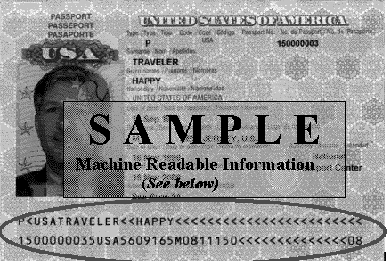

Take a picture of the front of your passport so we can capture the MRZ line.
The MRZ line on the front of your passport is located at the bottom of the passport as depicted below:

Capture Passport
Extract Data
Please wait...